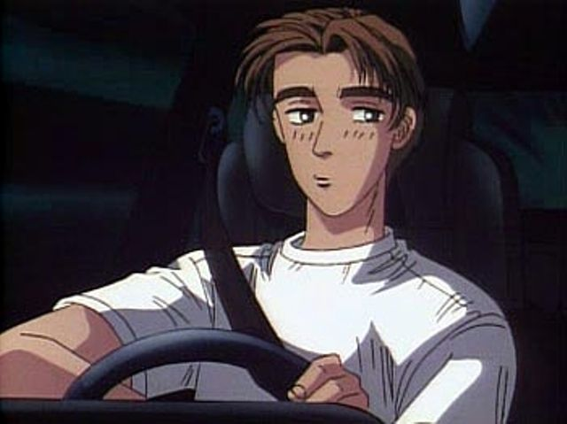

Personality
He sleeps. He delivers Tofu, I don't know, make up the rest yourself.
- Age:
- Height:
- Weight:
Takumi's White Horse
He drives the AE86, an 80s hot hatch.
His Friends and Family
Bunta Fujiwara
His father.
Itsuki, Iketani, and Kenji
His closest friends.
Natsuki Mogi
His girlfriend.
His Many Battles
Versus Keisuke Takahashi and his RX-7 FD
Technically 2 races, the first being when Takumi was on a tofu delivery run down Akina and began (most likely by accident) an improptu battle with Keisuke. Takumi passed him, to the shock of Keisuke, and later completely lost him after using a scandinavian flick, or inertia drift. The second battle was when Keisuke, knowing he had to prove that he could beat some old junker from the 80s, indirectly challenged Takumi to a battle.
Versus Takeshi Nakazato and his R32
He fights Takeshi. No one believes he will win, but at the five-hairpin section of the Akina downhill, as Takeshi's R32's front tires begin to lose grip, turns in and takes the inside line, passing Takeshi. As he's passing, Takeshi loses his cool and pushes his car to hard, causing it to spin out and crash.
Versus Shingo Shoji and his EG6
At first Takumi decided not to accept Shingo's duct-tape deathmatch challenge, but after Shingo causes Itsuki to crash, thinking it was actually him, Takumi decides he can't back down. Throughout the battle Shingo continually toys with Takumi, staying just behind him, but pulling ahead once to show he could pass him whenever he wants. At first, Takumi struggles with the tape, at one point nearly crashing as well as almost breaking his hand. Despite this, he soon gets the hang of it, noticing that he can go through corners faster if he uses the steering less. Slowly but surely Shingo notices that Takumi is not going to give in to the pressure, and decides to end things where they were by causing Takumi to crash. He pulls in closer and hits his bumper, causing him to spin out, but Takumi manages to pull out of the spin, not far behind Shingo. Shingo chalks it up to good luck, but Takumi is furious, saying there's no way he could lose to scum like Shingo.
Versus Mako and Sato, known as "Blue Impact", and their Sileighty
They race, Blue Impact spins out after Mako pushes the car too far during a turn, and Takumi narrowly avoids her car.
Versus Kenta Nakamura and his S14
Since it had started raining towards the latter half of Keisuke and Takeshi's up-hill battle on Myogi mountain, Kenta, who drove in the rain often to save money on tires, decided that this was his chance to try and defeat Takumi. In spite of believing he was superior in the rain, Takumi quickly overtakes Kenta.
Versus Ryosuke Takahashi and his RX-7 FC
The battle that everyone had been waiting for, inbetween Takumi Fujiwara and Ryosuke Takahashi, Keisuke's older brother. Ryosuke loses.
The story continues